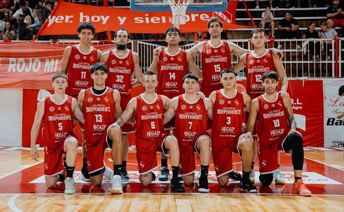
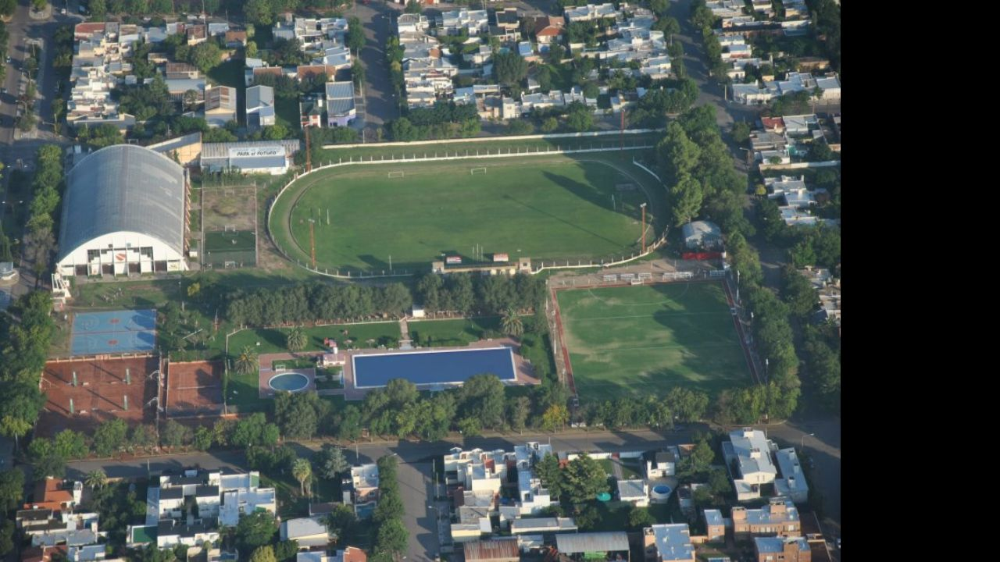

Club Sportivo IndependienteEl Club Sportivo Independiente es una de las instituciones deportivas más reconocidas de General Pico y de la provincia de La Pampa. Conocido popularmente como "El Rojo", el club cuenta con una rica historia de éxitos, especialmente en el básquetbol profesional, además de ser un constante protagonista de la Liga Pampeana de Fútbol. Su clasico rival, Club Atletico y Cultural Argentino de General Pico. HistoriaFue fundado el 20 de agosto de 1920. La mayor proeza de su historia institucional ocurrió en la temporada 1994-1995, cuando se consagró campeón de la Liga Nacional de Básquet (LNB), el máximo nivel del básquetbol argentino. Además de este histórico título, obtuvo un Campeonato Sudamericano de Clubes Campeones en 1996, marcando una época dorada indiscutida para el deporte pampeano. Disciplinas y actualidad deportivaEl club mantiene una fuerte presencia en el ámbito futbolístico, pero también ofrece otras alternativas para sus socios:
Roberto Petit de Meurville
Volver al Inicio. |
Información institucional
 Equipo de basquet del Club Sportivo Independiente
 Predio del Club Sportivo Independiente
|